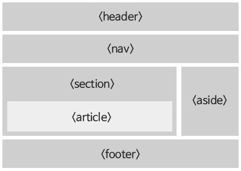

HTML Layout & semantic(의미있는) 태그

-
- heaher 태그 - 문서 또는 세션의 머리글을 정의할 때 사용
- nav 태그 - 네비게이션 태그 - 주로 메뉴 또는 검색을 정의할 때 사용
**각각 별도로 사용할 수 있고, header 태그 안에 nav을 넣어서 사용할 수 있음
-
- section - 본문의 일정 구역을 의미
- article - 본문의 독립적인기사
**section 안에 여러개의 article이 존재할 수 있음
- aside - 본문과 상관없는 컨텐츠 (로그인, 광고, 사이드 바)
- footer : 꼬리말(저자정보,저작권정보,사이트맵, 연락처, 주소)